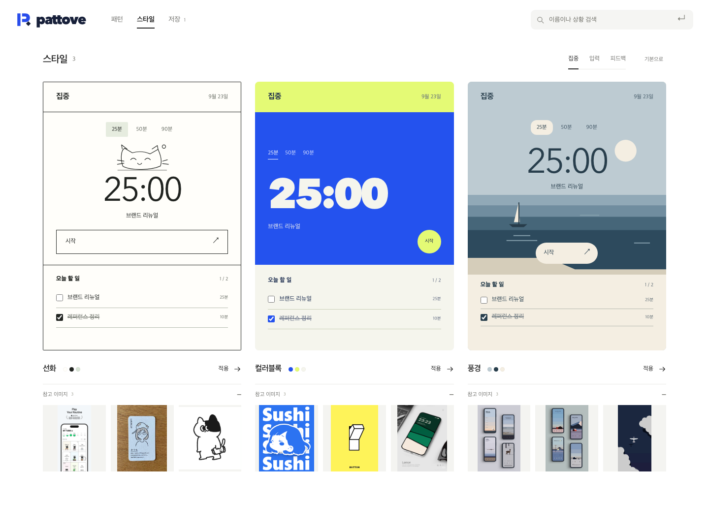
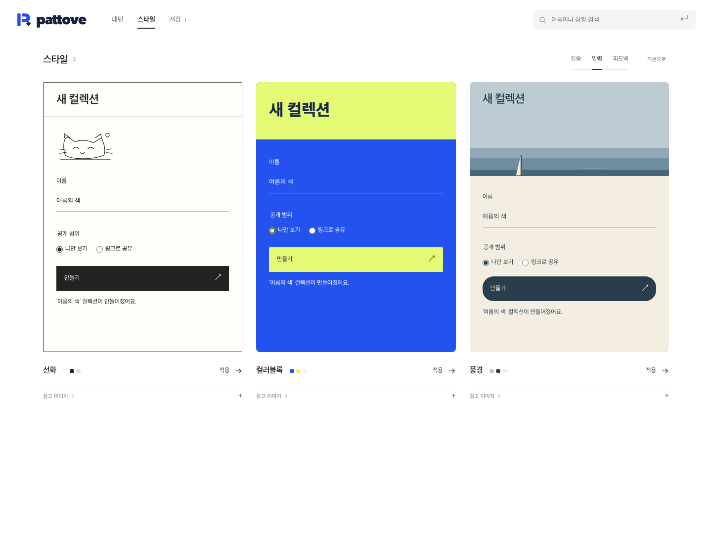
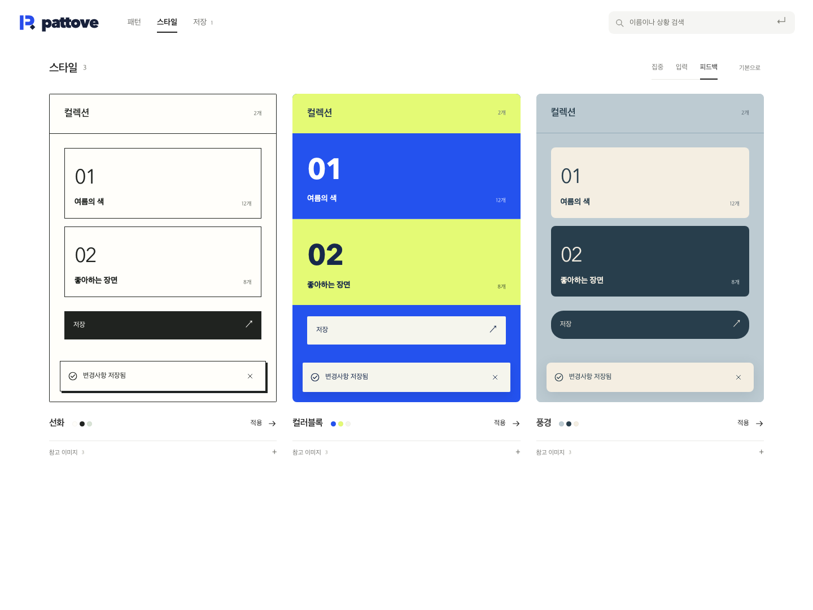
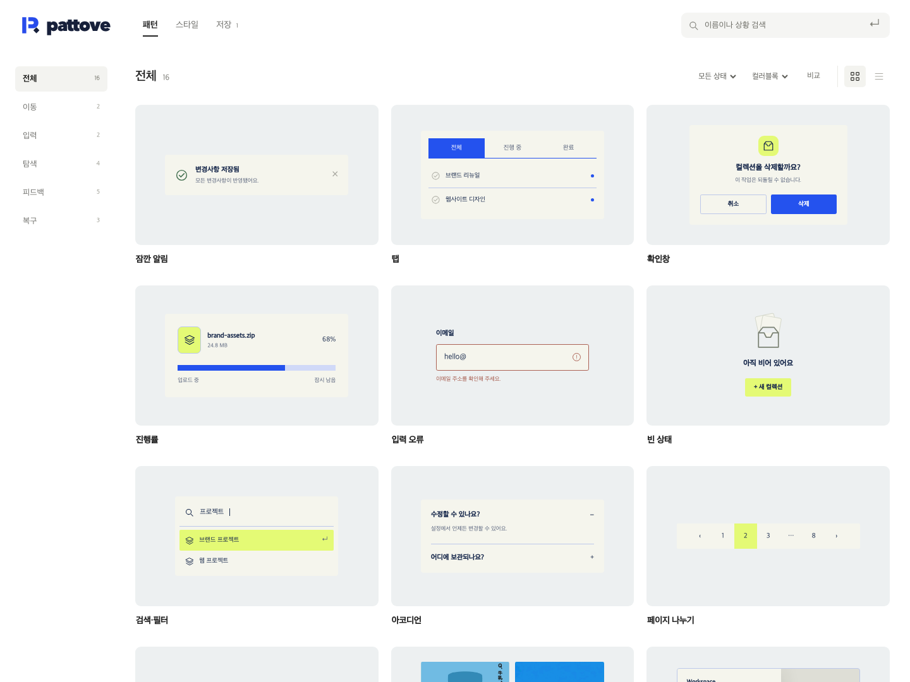
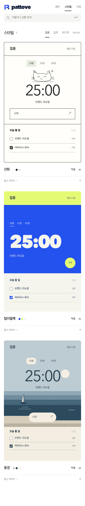

<!doctype html><html lang="ko"><meta charset="utf-8"><meta name="viewport" content="width=device-width,initial-scale=1"><title>패토브 화면</title><style>*{box-sizing:border-box}body{margin:0;background:#fff;color:#242424;font:14px/1.6 'Apple SD Gothic Neo',sans-serif}main{max-width:1320px;margin:auto;padding:32px 24px}header{display:flex;align-items:center;justify-content:space-between;margin-bottom:40px}.brand{display:flex;align-items:center;gap:8px;font:800 27px 'Avenir Next',sans-serif;letter-spacing:-1.5px}.brand img{width:30px;height:30px;border:0}.links{display:flex;gap:20px}a{color:inherit;text-decoration:none}h2{font-size:16px;font-weight:500;margin:0 0 16px}figure{margin:0 0 48px}figure img{display:block;width:100%;height:auto;border:1px solid #eee;border-radius:8px}.mobile{display:grid;grid-template-columns:1fr 1fr;gap:24px;max-width:820px;margin:auto}@media(max-width:600px){main{padding:22px 16px}.links{gap:14px;font-size:12px}.mobile{gap:12px}}</style><main><header><a class="brand" href="index.html">pattove</a><div class="links"><a href="index.html">실행 ↗</a><a href="index.html#styles">스타일 ↗</a><a href="영감-분석/index.html">영감 분석</a></div></header><section><h2>스타일 · 집중</h2><figure><a href="06-화면-전체-스타일.png"></a></figure></section><section><h2>참고 이미지</h2><figure><a href="14-스타일-참고-이미지.png"></a></figure></section><section><h2>스타일 · 입력</h2><figure><a href="10-스타일-입력.png"></a></figure></section><section><h2>스타일 · 피드백</h2><figure><a href="11-스타일-피드백.png"></a></figure></section><section><h2>패턴에 적용</h2><figure><a href="12-컬러블록-패턴.png"></a></figure></section><section><h2>패턴</h2><figure><a href="02-패턴-탐색.png"></a></figure></section><section><h2>상세</h2><figure><a href="05-상세-체험과-저장.png"></a></figure></section><section><h2>비교</h2><figure><a href="04-패턴-비교.png"></a></figure></section><section><h2>검색</h2><figure><a href="03-상황-검색.png"></a></figure></section><section><h2>저장</h2><figure><a href="08-저장한-패턴.png"></a></figure></section><section><h2>로고</h2><figure><a href="01-브랜드-정본.png"></a></figure></section><section><h2>모바일</h2><div class="mobile"><figure></figure><figure></figure></div></section><section style="max-width:440px;margin:auto"><h2>모바일 · 스타일</h2><figure><a href="13-모바일-스타일.png"></a></figure></section></main></html>
